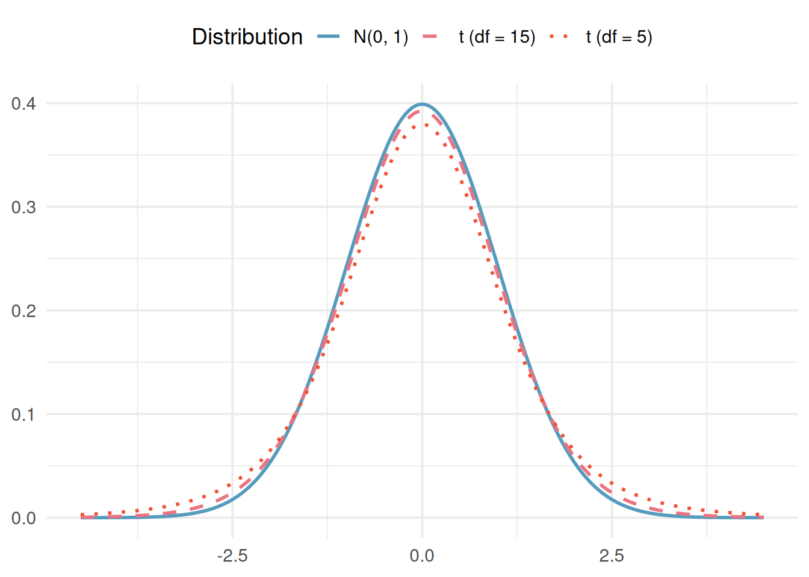

3.3 Confidence Intervals for Means
In the bootstrap confidence intervals chapter, we used bootstrapping to construct confidence intervals: a flexible, simulation-based approach that works well in many settings. In the normal approximation chapter, we saw that sampling distributions are often well approximated by the normal distribution. For means, however, we encounter a complication: the population standard deviation \(\sigma\) is almost never known, and estimating it with the sample standard deviation \(s\) introduces extra uncertainty. To account for this, we use a slightly different bell-shaped distribution called the \(t\)-distribution. In this chapter, we develop \(t\)-based confidence intervals for one mean, the difference between two independent means, and the mean of paired differences.
Key Concepts
- Find the mean and standard error of sample means
- Distinguish between separate samples and paried data when comparing two means
- Recognize when a \(t\)-distribution is an appropriate model for a distribution of sample means, difference in means between two populations, and the mean of paired differences.
- Use a \(t\)-distribution, when appropriate, to compute a confidence interval for a population mean, difference in means between two populations, and the mean of paired differences.
The \(t\)-distribution
Earlier we used the normal distribution to model sampling distributions, and in the previous chapter we applied it to proportions, where the standard error formula \(SE = \sqrt{\hat{p}(1 - \hat{p})/n}\) depends only on the sample proportion and the sample size: both of which are known. For quantitative data, the goal is often to learn about a population average from a sample average. If sample size is large enough, the CLT says that the distribution of all sample averages (\(\overline{x}\)) will follow a normal distribution that is centered at the population average (\(\mu\)). In Unit 2, we discussed estimating the standard error of a statistic using a bootstrap distribution. When we use the CLT, we can estimate the standard error for a sample average by \[ SE(\overline{x}) = \frac{ \sigma }{ \sqrt { n }} \] where \(\sigma\) is the population standard deviation, and \(n\) is the sample size.
We estimate the standard error of \(\overline{x}\) with \(\frac{s}{\sqrt{n}}\)
For averages, we almost never know the population standard deviation (\(\sigma\)), so we estimate it by using the sample standard deviation (\(s\)). When we use \(s\) instead of \(\sigma\), \(\overline{x}\) no longer follows a normal distribution. Instead, \(\overline{x}\) follows a \(t\)-distribution.
Back in the early 1900s, a man named William Sealy Gosset was working for the Guinness brewery. During his career at Guinness, he was using statistics to select the best yielding varieties of barley for brewing. At the time Guinness had forbidden any of its employees from publishing in scientific journals. So, Gosset published his findings, a new statistical distribution called the \(t\)-distribution under the name Student. The \(t\)-distribution is based on a new parameter called the degrees of freedom (d.f.).
The \(t\)-distribution is a bell-shaped, symmetric distribution that is similar to the normal distribution but has heavier tails (more probability in the extremes). The exact shape of the \(t\)-distribution depends on a parameter called the degrees of freedom (df).
- When \(df\) is small, the \(t\)-distribution has noticeably heavier tails than the normal (extreme values are more likely).
- As \(df\) increases, the \(t\)-distribution approaches the standard normal distribution.
What Gosset found is that provided we have met one of two conditions, then \[ t = \frac{ \overline{x} - \mu }{ s / \sqrt{n} } \sim t_{n - 1}, \] or \(t\) follows a \(t\)-distribution with \(n - 1\) degrees of freedom. There are two possible ways you can justify using the \(t\)-distribution for averages.
To use the \(t\)-distribution, you need either
- \(n \ge 30\) or
- a population that is approximately normal
- For a large enough sample size (\(n \ge 30\)), you can use the \(t\)-distribution
- If \(n < 30\), then the \(t\)-distribution is only a good approximation if the population is approximately normal.
Class Example 3.3.1: Describe the sampling distribution
For each of the following questions, identify whether or not a \(t\)-distribution would be appropriate. If so, identify the number of degrees of freedom that you would use for the \(t\)-distribution.
- Samples of size \(n = 10\), from a population that is approximately normal.
- Samples of size \(n = 15\), from a population that is heavily skewed to the right.
- Samples of size \(n = 50\), from a population that is heavily skewed to the left.
Just as we use \(z^*\) for the normal distribution, we use \(t^*_{df}\) for the \(t\)-distribution. Because the \(t\)-distribution has heavier tails, \(t^*\) values are larger than the corresponding \(z^*\) values (especially for small \(df\)).
Selected critical values for 95% confidence intervals:
| \(df\) | \(t^*_{df}\) (95% CI) | \(z^*\) (for comparison) |
|---|---|---|
| 5 | 2.571 | 1.960 |
| 10 | 2.228 | 1.960 |
| 30 | 2.042 | 1.960 |
| 100 | 1.984 | 1.960 |
| \(\infty\) | 1.960 | 1.960 |
Generally, to find the appropriate \(t^*\) for the confidence interval for a population average, we need to use technology to find the corresponding endpoints for the confidence interval.
Confidence intervals for a single mean
We can only use the \(t\)-distribution for confidence intervals if
- \(n \ge 30\) or
- the population is approximately normal
Provided that the sample size is large enough (\(n \ge 30\)) or the population is approximately normal, a confidence interval for a population average \(\mu\)can be constructed using
\[ \overline{x} \pm t^* \frac{ s }{ \sqrt{ n }} \]
where \(\overline{x}\) is the sample average and \(t^*\) is the appropriate critical value from a \(t_{n-1}\) distribution.
Class Example 3.3.2: Triathlon Heart Rates
The article “Cardiovascular and Thermal Response of Triathlon Performance” reports on a research study involving nine male triathletes. Maximum heart rate (beats/min) was recorded during performace of each of the three events. For swimming, the recorded values were 178, 182, 184, 184, 188, 190, 192, 196, 198.
- What is the variable in this study? Is it categorical or quantitative?
- What requirement is needed to make it appropriate to use the \(t\) confidence interval for this data?
- Compute a 90% confidence interval for the mean heart rate of triathletes when swimming.
- Provide an interpretation for your interval in c).
- If we had calculated a 90% confidence interval instead of a 99% confidence interval, would it have been larger or smaller than the 99% confidence interval? Explain.
Class Example 3.3.3: Dairy cows
A study of 66 dairy cows found that the mean milk yield was 12.5 kg per milking with a standard deviation of 4.3 kg per milking.
- Compute a 95% confidence interval for the average milk yield in the population. Make sure to check your conditions.
- Provide an interpretation for your interval in a).
- Is it plausible that the population mean milk yield is 11kg per milking?
- If the mean and standard deviation were based off a sample fo 660 cows instead of 66, how would the 95% interval change?
Confidence intervals for a difference in means
We often want to learn about a difference in averages from two groups. We can use the CLT to conduct inference about differences in averages if we have a large enough sample size. Consider two groups \(n_1\) and \(n_2\) that come from populations with means \(\mu_1\) and \(\mu_2\) and standard deviations \(\sigma_1\) and \(\sigma_2\), respectively. If sample size is large enough, the CLT says that the distribution of all differences in sample averages (\(\overline{x}_1 - \overline{x}_2\)) will follow a normal distribution that is centered at the true population difference in averages (\(\mu_1 - \mu_2\)). When we use the CLT, we can estimate the standard error for a sample average by
\[ SE(\overline{x}_1 - \overline{x}_2) = \sqrt{ \frac{ \sigma_1^2}{n_1} + \frac{ \sigma_2^2}{ n_2}} \]
As with single averages, we almost never know the population standard deviations (\(\sigma_1\) and \(\sigma_2\)), so we estimate them by using the sample standard deviations (\(s_1\) and \(s_2\)).
We estimate the standard error of \(\overline{x}_1 - \overline{x}_2\)with \(\sqrt{\frac{s_1^2}{n_1} + \frac{s_2^2}{n_2}}\)
When we use \(s_1\) and \(s_2\) instead of \(\sigma_1\) and \(\sigma_2\), \(\overline{x}_1 - \overline{x}_2\) no longer follows a normal distribution. The difference follows a \(t\)-distribution and the degrees of freedom are approximately equal to \(n_1 + n_2 - 2\).
In order to be able to use this distribution for a difference in averages, you need to make sure that each group satisfies the conditions for an average. Recall from earlier in this chapter:
- For a large enough sample size (\(n_1 \ge 30\) and \(n_2 \ge 30\)), you can use the \(t\)-distribution
- If \(n < 30\), then the \(t\)-distribution is only a good approximation if the population is approximately normal.
Class Example 3.3.4: Describe the sampling distribution
For each of the following questions, identify whether or not a \(t\)-distribution would be appropriate.
- Comparing averages from two samples of sizes \(n_1 = 10\) and \(n_2 = 15\), from populations that are approximately normal.
- Comparing averages from two samples of sizes \(n_1 = 15\) and \(n_2 = 40\), where population 1 is heavily skewed right, and population 2 is approximately normal.
- Comparing averages from two samples of sizes \(n_1 = 50\) and \(n_2 = 50\), from two populations that are heavily skewed to the left.
Remember, each sample must satisfy the necessary conditions for averages.
Provided that for each group the sample size is large enough (\(n \ge 30\)) or the population is approximately normal, a confidence interval for a difference in population averages \(\mu_1 - \mu_2\) can be constructed using
\[ (\overline{x}_1 - \overline{x}_2) \pm t^* \sqrt{ \frac{ s_1^2 }{ n_1 } + \frac{ s_2^2}{ n_2 }} \]
where \(\overline{x}_1 - \overline{x}_2\) is the difference in sample averages and\(t^*\)is the appropriate confidence multiplier.
Class Example 3.3.5: Highball vs tumbler
Two common types of glassware at a bar are “highballs” (tall and thin) and “tumblers”(short and wide). Researchers randomly assigned participants either a “highball” glass or a “tumbler,” each of which held 355 ml. Participants were asked to pour a shot (1.5 oz = 44.3 ml) into their glass. The summary statistics are given in the table below.
| \(n\) | \(\overline{x}\) | \(s\) | |
|---|---|---|---|
| Highball | 99 | 42.2 ml | 16.2 ml |
| Tumbler | 99 | 60.9 ml | 17.9 ml |
We want to know about the difference in the average amount of liquid poured into the two types of glasses.
- What are the variables of interest in this study? Are they categorical or quantitative? Which is the explanatory variable and which is the response?
- What is the parameter of interest?
- Find and interpret a 95% confidence interval estimate for the difference in the average amount poured in the two different types of glasses. Use highball for group 1 and tumbler for group 2.
- If you were the owner of a local bar, from a profit perspective, do you think there is any reason to prefer the highball to the tumbler glass?
Class Example 3.3.6: Caffeine amounts
A consumer agency wanted to estimate the difference in the amount of caffeine in two brands of coffee. The agency took a random sample of 15 one-pound jars of Brand I coffee, yielding a mean amount of caffeine of 80mg/jar with a standard deviation of 5mg. Another random sample of 12 jars of Brand II gave a eman of 77mg/jar with a standard deviation of 6mg. Find and interpret a 90% confidence interval for the difference in the population mean caffeine amounts. What does this interval tell us about the difference in caffiene for the two brands? Are there any conditions that must be satistified for the interval to be valid?
Confidence intervals for an average difference
When examining differences in averages, typically, we use one of two methods. One option is to use the tools we discussed for the difference in averages. However, if there is a reason that the groups are not separate groups, then there is a better technique to use. If there is some kind of natural pairing between subjects in a study, then we can use techniques based on the concept of paired differences. Most often, paired differences occur when the subjects of the study receive two different levels of a factor (most commonly a control and a treatment). However, another way this appears is in a study in which two participants have been paired based on a number of different characteristics.
Class Example 3.3.7: Deciding between difference in averages and paired difference
For each of the following, identify the cases for the study and decide if it would be more appropriate to use a difference in averages or paired difference.
- In a medical study to learn about the difference in the efficacy of generic versus brand name blood pressure medications, 50 individuals under 30 years old and 50 indiviudals over 30 years old were randomly assigned to receive either a generic medication or a brand name medication.
- Researchers want to learn about the average age differences between partners who have been together more than 10 years. They randomly select 50 sets of partners and ask them their age.
- In a study on the average difference in calories between servings of strawberry and vanilla yogurt, a food scientist randomly selected 12 brands of yogurt and recorded the calories in their strawberry and vanilla yogurts.
- The Office of Greek Life randomly selects 45 fraternity and sorority members and looks to see if there is a difference in the average GPAs for fraternities vs sororities.
In this section, we will use a subscript \(d\)to indicate that we are working with differences.
We either need
-\(n_d \ge 30\)or - the population of differences to be approximately normal
In order to be able to use the \(t\)-distribution for a difference in averages, you need to be sure that the differences, \(d_i = x_{1,i} - x_{2,i}\), for each pair satisfy the conditions for an average. Recall from earlier in this chapter:
- For a large enough sample size (\(n_d \ge 30\)), you can use the \(t\)-distribution
- If \(n_d < 30\), then the \(t\)-distribution is only a good approximation if the population is approximately normal.
Provided that the conditions are met, a confidence interval for the average difference in the population \(\mu_d\) can be constructed using
\[ \overline{x}_d \pm t^* \frac{ s_d }{ \sqrt{ n_d } } \]
where \(\overline{x}_d\) is average of the differences in the sample and \(t^*\) is the appropriate critical value from a \(t\)-distribution with \(n_d - 1\) degrees of freedom.
Class Example 3.3.8: Book prices
You are given the task of determining if books differ in cost through Amazon.com or a local bookstore. The other student gathers data by selecting a random sample of 8 books from Amazon.com and a second independent random sample of 8 books from the local bookstore. The data are given below along with summary statistics.
| Source | Mean | SD | ||||||||
|---|---|---|---|---|---|---|---|---|---|---|
| Amazon | 53 | 81 | 14 | 14 | 22 | 85 | 88 | 38 | \(\overline{x}_1 = 49.375\) | \(s_1 = 31.972\) |
| Bookstore | 45 | 76 | 43 | 64 | 21 | 94 | 47 | 25 | \(\overline{x}_2 = 51.875\) | \(s_2 = 24.868\) |
- Compute a 95% confidence interval based on how the other student collected data. What does this interval tell you about the difference in average price between Amazon and the local bookstore?
- How might you have conducted this study instead? Why would a different study design be advantageous here?
- Suppose that the data you collect from the different study design is given below. Based on the data that you collected, compute a 95% confidence interval for the difference in the cost of books for the two places? Does your conclusion differ from part a)? What accounted for this difference? (Hint: look at the SE for both cases)
| Source | ||||||||
|---|---|---|---|---|---|---|---|---|
| Amazon | 53 | 81 | 14 | 14 | 22 | 85 | 88 | 38 |
| Bookstore | 45 | 76 | 43 | 64 | 21 | 94 | 47 | 25 |
Summary
This chapter developed formula-based confidence intervals for means using the \(t\)-distribution.
- The \(t\)-distribution accounts for the extra uncertainty from estimating \(\sigma\) with \(s\). It has heavier tails than the normal distribution, especially for small degrees of freedom.
- One-sample \(t\) CI: \(\bar{x} \pm t^*_{n-1} \times \frac{s}{\sqrt{n}}\). Requires independent observations and approximate normality (or large \(n\)).
- Two-sample \(t\) CI: \((\bar{x}_1 - \bar{x}_2) \pm t^*_{df} \times \sqrt{\frac{s_1^2}{n_1} + \frac{s_2^2}{n_2}}\). Requires independence within and between groups, and approximate normality or large samples in each group.
- Paired \(t\) CI: Compute differences for each pair, then apply the one-sample \(t\) CI to the differences: \(\bar{x}_{d} \pm t^*_{n_{d}-1} \times \frac{s_{d}}{\sqrt{n_{d}}}\).
- Always check conditions before using \(t\)-methods: independence and normality/sample size.